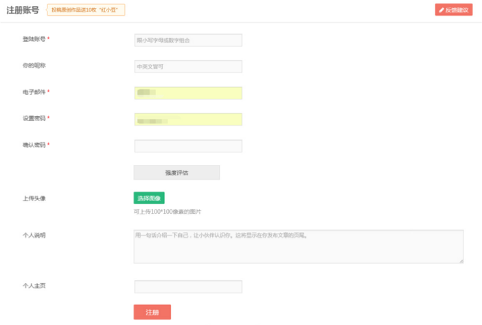

1.正则的概念
JS诞生的目的是什么？
就是为了做表单验证。
在JS未出现以前，表单的信息验证需要传输给后台，让后台做数据验证处理之后，再返回给前端页面处理的结果。在带宽有限的情况下，整个验证过程非常复杂，且耗时。
在使用JS做验证的过程中，一个简单的验证规则的实现非常的麻烦。
如：从杂乱的字符串中找数字
var str = “asd256asd834as5da38sd512zcacas";
var linshi='';
var arr=[];
for(var i = 0; i < str.length; i++){
if(str[i]>=0 && str[i]<=9){
linshi += str[i];
}else{
if(linshi != ''){
arr.push(linshi)
linshi = '';
}
}
}
console.log(arr);
如果使用正则的方式：
var arr = str.match(/\d+/g);
就可以完成功能
什么是正则？
正则表达式（regular expression）是一个描述字符规则的对象。可以用来检查一个字符串是否含有某个字符，将匹配的字符做替换或者从某个字符串中取出某个条件的子串等。
正则表达式：
正则表达式其实就是一种规则，其实把正则称作规则表达式更为恰当。正则的语法基于一种古老的perl语言。
为什么要用正则：
前端往往有大量的表单数据校验工作，采用正则表达式会使得数据校验的工作量大大减轻。常用效果：邮箱，手机号，身份证号等（使用熟练的情况下）
任何程序都可以不用正则表达式写出来，但根据懒人原则，怎么做不言而喻。
2.创建方式
正则的创建方式：
1.构造函数方式
var reg1 = new RegExp("a");
var str = "adassdfsd";
console.log(str.match(reg1)) //输出匹配a的字符
2.字面量方式，古老的perl语言风格
var reg2 = /a/;
console.log(str2.match(reg2)); //输出匹配a的字符
/ / 是正则表达式的标识符
" " 是字符串的标识符
[ ] 是数组的标识符
{ } 是对象的标识符
正则中的修饰符，写在正则表达式后面／的后面：
g表示全局匹配，查找所有
i表示忽略大小写
课程目标：邮箱的规则
数字+英文+@+英文+.+英文
正则的验证：
var reg = /[0-9]/;
reg.test(str) //返回为true表示验证成功，false表示失败
4.字符串.replace(oldstr, newstr)函数 和 字符串.match(正则)函数
字符串的replace函数的功能：将老字符串替换成新字符串
可以利用此函数，将老字符串表示成正则表达式，对字符串进行替换
如：字符串中的abc替换成“哈哈”，如果正则后面没有g，则只替换一个，如果没有i，则大写不会替换
var str = “abc123abc456abbcdABCefaacbcdbcabc";
var reg = /abc/g;
console.log(str.replace(reg,"哈哈"));
字符串match函数的功能：提取所有的想要的东西
返回一个数组，包含所有符合条件的字符
\d 匹配所有的数字
var reg = /\d/g;
console.log(str.match(reg)) //打印字符串中所有的数字
+ 若干，量词，表示多少个都可以，至少1个，无上限
var reg = /\d+/g;
console.log(str.match(reg)) //打印字符串中所有的数字,连续
| 或，类似于js中的 ||
var reg = /abc|bbc|cbc|dbc/g
console.log(str.match(reg)); //打印字符串中的abc，bbc，cbc，dbc
var reg = /[a-c]bc/g
[ ] 中元符
var reg = /[a-z]/ //匹配所有字母
[0-9] == \d
[^ ] 排除（除了）
var reg = /[^0-9]/ //表示除了数字之外所有
. 代表所有，不建议使用
var reg = /<.+>/g
console.log(str.replace(reg,"")) //过滤，表示尖括号里面的东西不要，但是？
正则的贪婪定律：
var reg = /<[^<>]+>/g
console.log(str.replace(reg,"”)) //表示尖括号里面的东西不要，真
转义字符：
\d —— [0-9] 数字
\w —— [a-z0-9_] 数字，字母，下划线
\s —— 空白字符（空格）
\D —— [^0-9] 非数字
\W —— [^a-z0-9_] 非数字，字母，下划线
\S —— 非空白字符
量词：限定符，可以指定正则表达式的一个给定组，必须要出现多少次才能满足匹配
* 匹配前面的子表达式零次或多次
+ 匹配前面的子表达式至少一次或多次
? 匹配前面的子表达是零次或一次
{n} 匹配确定n次
{n,} 至少匹配n次
{n,m} 至少匹配n次，最多匹配m次
注：在限定符后紧跟？，则由贪婪匹配变成非贪婪匹配
qq号验证规则:
var reg = /[1-9]\d{4,10}/
固话的规则：0411-6666888
开头为0或者2的或者三位数字加上-开头为非零的八位数字，结尾是1到4的分机号
var reg = /(0\d{2,3}-)?[1-9]\d{7}(-\d{1,4})?/
复杂邮箱的规则：英文数字下划线@一串英文或数子.一串英文
var reg = /\w+@[a-z0-9]+\.[a-z]+/i
想要校验怎么办？在正则转义字符前加上\
正则的方法
正则.test(字符串)方法，返回值是true和false
正则.test(字符串)有一个特性，就是只要字符串的一部分符合要求，那么就会返回true
解决方法：
^开始
$结束
exec()找到了返回数组，找不到反回null
小练习：
删除多余空格
str.replace(/\s+/g,'');
删除首尾空格
str.replace(/^\s+/,'');
str.replace(/\s+$/,'');
检查邮政编码 共 6 位数字，第一位不能为 0
/^[1-9]\d{5}$/
正则表达式手册
常用检测方式：
1.中文检测
unicode编码中文监测：/^[\u2E80-\u9FFF]+$/
2.用户名检测
正则：/^[a-z0-9_-]{3,16}$/
3.邮箱检测
/^([a-z0-9_\.-]+)@([\da-z\.-]+)\.([a-z\.]{2,6})$/
可以多次出现 (字母数字下划线.-)@可以出现多个(数字字母.-).2到6位字母或.
/^[a-z\d]+(\.[a-z\d]+)*@([\da-z](-[\da-z])?)+(\.{1,2}[a-z]+)+$/
可以有多个(字母数字)可有多个可无(.多个(字母数字))@可以多个(数字字母可 有1次可无(-数字字母))可以有多个(1或2个.多个字母)
abc123@123abc.com
4.URL检测
/^(https?:\/\/)?([\da-z\.-]+)\.([a-z\.]{2,6})([\/\w\.-]*)*\/?$/
有1次或0次(http有1次或0次s : //) 可以多个(数字字母.-) . 2到6位(字母.) 可多个或0个 (可以多个或0个 /数字字母下划线.-) 可0或1次/
5.HTML标签检测
/^<([a-z]+)([^<]+)*(?:>(.*)<\/\1>|\s+\/>)$/
<多个(字母)可多个或0个(除了<的所有字符) />
<多个(字母)可多个或0个(除了<的所有字符)>多个任意字符 </重复第一部分的多个字母>
自定义的html标签
/<[^<>]+>/g
1.掌握正则的创建方式
2.掌握正则表达式语言
3.邮政编码检测 百度 邮编的规则，写成正则（）
4.文件格式检测 xxxxx.sss
5.字符串首尾去空格
6.邮件格式检测
1.手机号检测
2.身份证检测 百度 身份证的格式
3.日期检测 2017-/.,11-/.,16
4.中文检测
5.用户名检测
6.字符串过滤 敏感词过滤 tmd
1.表单及AJAX的综合应用（不用写样式，只要有元素就行）

1.用户名 用户名仅支持中文、字母、数字、“-”“_”的组合，4-20个字符
2.密码的规则 数字字母特殊字符，一种类型，弱。两种类型为中，三种类型为强
3.重复密码 跟第一次输入 密码一致
4.手机号的验证 第一位必须为1，后面再加10位数字
5.邮箱 数字大小写字母_- 3到12位 @ 数字字母 2到9位 . 字母2到5位
6.提交按钮的时候，判断所有输入数据是否符合。符合跳转，否，不跳
1.掌握正则的封装
2.掌握综合表单验证